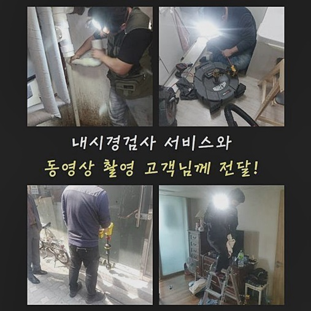
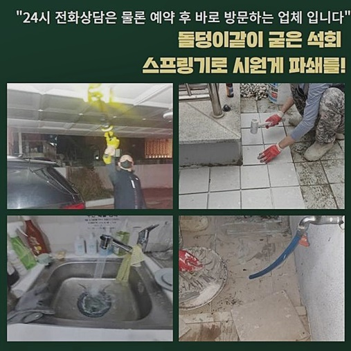
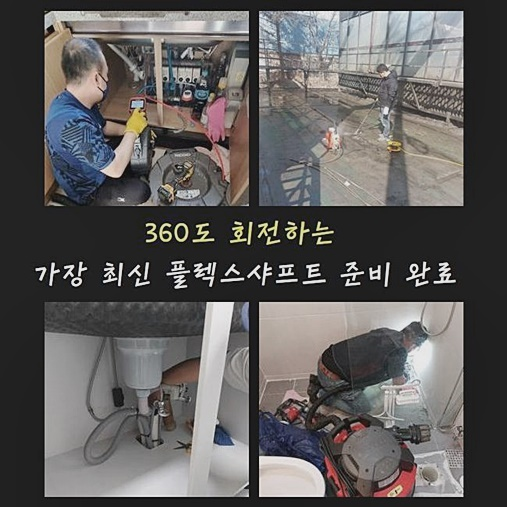
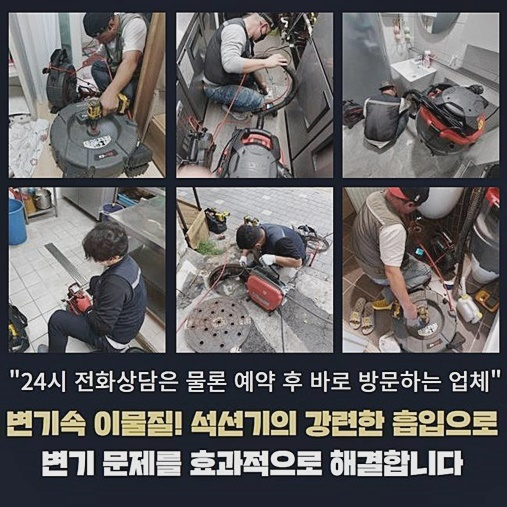
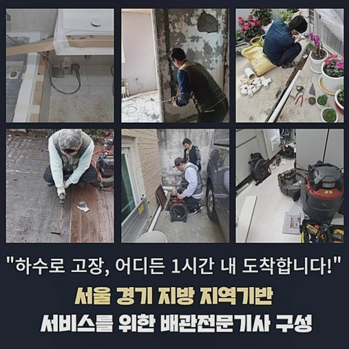
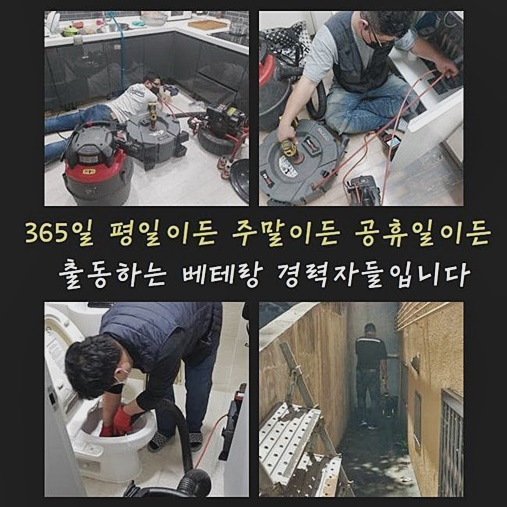

🏠 동작구 노량진동욕실뚫음 대방동 하수구뚫는곳 설비업체
용인시 처인구 배관막힘 전문 시공 후기

📋 작업 개요
- 위치: 용인시 처인구, 수원시 영통구, 화성시 동탄
- 서비스 유형: 배관막힘, 고압세척, 내시경점검
- 작업 일시:
- 업체명: 하수구수사대 (010-5615-2118)
🔍 문제 상황
동작구 노량진동욕실뚫음 대방동 하수구뚫는곳 설비업체
하수시설이 마비됐을 때 빠르게 현장으로 이동하여 오류가 난 설비와 답답한 심경을 풀어드리는 활동을 이어가고 있습니다
정상적인 생활하수가 원활히 이동하던 하수통로가 불현듯 꽉 막혀버린 모습이라 나름 많은 방법을 물색하여 원상복구를 시키려 했으나 이렇다할 효과가 없었나요?
그저 방치해 두시지만 말고 믿을 수 있는 저희 업체에게 해결을 위임해 주시면 정상적인 시설로 다시 맞춤 작업을 시행해 드리니 알아두시면 도움이 되실겁니다
하수가 막히는 동기는 찌꺼기가 장기간 축적되어 생겼을 일이 가장 빈번하긴 합니다
소량일뿐 대량으로는 채워지기 이전인 상황이라면 손쉽게 활용할 수 있을 배관용 용해제나 비닐을 씌워 압력을 주는 등 비교적 평이한 방식만 걸어줘도 막힌 부분이 완화됩니다
허나 이물질이 잔뜩 차오르거나 집적되어 상당한 크기로 확장된 단계에서는 셀프 해결은 해결이 어렵다고 봅니다
막힘이 오래되고 심하면 전문가의 손을 빌려 해소를 해보셔야 하는데요
아파트 시설을 이용하시는 의뢰인분이 잘 돌아가던 주방 싱크대 물이 안 빠져서 빠르게 와주면 좋겠다는 전화를 받고 빠르게 출장을 가게 되었어요
하수구가 처음 고장나면 거듭 막힘이 일어날 여지가 충분하다는 말입니다
용해되지 않는 물질들로 인해 물길이 봉쇄되어 버렸다면 완벽하게 처리를 해주지 않는다면 이물질이 계속 쌓이며 새로운 문제를 야기합니다
공동주거시설에서 이어지는 하수구 회복작업에는 해결이 쉽지않은 상황들은 적은 편이므로 마음이 무겁지는 않은데요
저희는 매일 똑같이 의외의 변수가 얼마든지 찾아올 수 있다 생각해서 단단히 챙겨갑니다

🔎 원인 분석
💡 전문가 진단: 정밀 진단 장비를 사용하여 슬러지의 고착 여부를 판명하고 타격/세척 작업을 실시했습니다.
원활한 하수구작업을 이어가려면 고성능의 석션기와 샤프트나 배관 관측 내시경 등의 다수의 장비가 동원되어야 하는데요
뛰어난 효능을 자랑하는 장치들을 두루 가지고 확인한 후 출발 해드리고 있어요
석션기의 경우는 청소기랑 거의 흡사한 원리로 물기에도 강한 습식이라는 차이점이 있어요
그리 큰 사건이 아니면 석션기를 가동시켜서 흡수를 해주고 나면 중단된 점이 고쳐지는 작업지들도 제법 있네요
석션만으로도 해결이 되는 사건은 적은 편이고 여러 장치들을 써야하는 때가 훨씬 많다고 할 수 있어요
석션의 가동으로 노폐물의 제거를 할 수 있는데다가 액상인 하수까지도 싹 빼내줄 수 있는데 배관 속을 완전히 비워야 관로 속에 카메라를 진입시킬 수 있게 됩니다
어디가 막혀있는지 알려주시면 바로 오류가 생긴 측면을 하나하나 눈으로 뜯어 봅니다
뿌옇게 물도 고여있었지만 이러한 문제로 인해서 깊숙한 곳에서부터 고인물이 치솟는 상황이 있었나 봅니다
적당한 생활용수만 폐기하면 괜찮을 수 있으나 만약 많은 물을 부었을 때 역류의 움직임이 보이면 통로가 많이 좁고 이물질이 많다는 단서로 봐도 무방해요
과잉 축적된 슬러지가 물의 경로를 가로막아서 줄줄 바깥으로 새버리는 겁니다
제일 먼저 석션기 작업을 스타트를 끊어줬는데 슬러지 덩어리는 온데간데 없었고 물만 찰랑거리며 흡입되었네요
게다가 역류증세도 여전한 상황이었고 고인 물은 옴짝달싹 하지 않았어요
내면의 물을 빼냈으니 내부로 진입하여 동기를 추적하기 위해서 배관내시경 기기를 켜서 깊숙하게 당도시켜 주었습니다

🔧 작업 과정
안으로 밀어 넣은 지 오래 지나지 않아서 문제점을 파악하게 됐는데요
잔뜩 뭉친 슬러지가 너무 가득 차올라서 더 아래의 공간은 확인하기가 어렵더군요
그정도로 중증인 파이프였기에 물기가 원활하게 흘러갈 수가 만무한 상황이었죠
물의 이동을 정상화시켜주려면 정화작업이 필수였습니다
경화되고 말라붙은 침전물 덩어리가 있다면 작은 조각으로 분리해서 흡입 작업을 거쳐야 하므로 강한 힘으로 스케일링해주는 샤프트로 떡하니 자리를 차지하는 슬러지를 조각내는 과정을 거쳤습니다
플렉스샤프트의 머리 쪽에 달려있던 쇠사슬이 빠르게 돌면서 작은 입자들이 되게끔 파쇄하는 업무를 해야 합니다
샤프트작업을 하는 동안에는 카메라로 확인을 해가며 세기도 잘 조절하니 배관이 부서질 일은 없어요
지식이 미미한 사람이 아니고 전문공이 유연하게 진행해 드리고 있으므로 우려하지 않으셔도 됩니다
많은 오류를 개선시켜왔고 관련 지식이 많기 때문에 풀어나가기 까지의 문턱이 다소 높다고 해도 어려움 없이 말끔한 결과물을 선사합니다
명확하게 상황을 파악하고 가장 합리적인 방법을 고르고 남은 잔량없이 처리하는 데에 혼신의 힘을 다합니다
얼마만큼 진행됐나 카메라로 청소 중인 배관 속에 잔량이 얼마나 남았는지 쭉 지켜보게 됩니다
웬만큼 돌린 이후에 샤프트를 다 쓰고 나면 다시 습식청소기를 넣어서 둥둥 떠다니는 조각을 빨아 올려주면 끝입니다
다음 단계로 넘어가려고 넣어줬던 샤프트의 호스를 바깥으로 빼보니 엉망으로 끈적한 기름쓰레기가 거머리처럼 붙어있더라고요
아래로 내려가며 슬러지를 쭉 파쇄하고 끌어당기는 과정을 계속해서 청소를 이어가다보면 배관의 고장난 상황이 자연스럽게 해결됩니다
이물질이 제법 오래 점차 석회화가 되면서 구린내도 상당량 피어오르는 현장이었습니다
속에 있는 오염물들을 모조리 없애주고 나면 하수구냄새가 발생하는 증세도 자연스럽게 해결됩니다
남은 부분이 전혀 여전히 머물러있지 않게 한 톨도 남아있지 않게 배관 내를 세척합니다
엄청나게 고여있던 침전물들이 빠진 상황이고 과거에 내부 상황을 떠올려 보자면 판이하게 달라졌어요
파이프라인의 봉인된 모든 부분들을 없애준 후이니 다음은 내부의 오염 물질들을 끝처리로 석션하여 정리정돈해 주면 끝입니다
최종확인 절차로 카메라를 켜 안쪽의 상황을 판별해 보니 가슴답답하게 정체됐던 통로가 시원스럽게 뚫린 모습을 실제로 체험하게 됐네요
옆에 계시던 고객님도 함께 작업물을 보고 받으시고는 가슴을 쓸어내리셨어요


✅ 작업 완료
재차 뚫을 필요가 없도록 지치지 않고 집중력을 발휘하여 배관 청소를 통과하고 나니 배관의 속은 충분히 안심하실 수 있도록 나아지고 냄새도 전혀 없었죠
다음은 개수대에서 수도를 켜서 기능검사를 실시해 보았더니 막히는 기색 없이 잘 빠져나가는 것이 보였네요!
물을 고이게 했다가 일시에 폐기할 때도 속도가 잘 나오는지에 대한 검사도 마찬가지로 실시해 봤는데요
한가득 받아서 물을 흘러내리게 했는데도 역행하는 하자 없이 말끔히 처리가 되더라고요
작업 과정에 운용했던 기계를 뽑아서 정리하고 주름관의 근처까지도 잘 쓸어내고 닦아드리고 철수를 하게 됐네요
하수구의 트러블이 생겨서 뚫어낼 뾰족한 수가 없다면 접수만 가볍게 해주시면 원하시는 시간대에 방문드려 막힘 없는 작업 능력을 기반으로 빛나는 배관을 되찾게 해드릴게요!



⚠️ 하수구 배관 막힘 예방 및 관리 가이드
- ✅ 머리카락, 비닐, 물티슈 등 물에 분해되지 않는 이물질은 절대 흘려보내지 마세요.
- ✅ 기름기 많은 식기는 설거지 전 키친타올로 먼저 기름때를 닦아내세요.
- ✅ 주기적으로 배수구에 뜨거운 물을 가득 부어주어 유지방 고착을 방지하세요.
- ✅ 작업 후 1년 이내 재발 시 무상 A/S 보증 서비스를 제공합니다.
💡 핵심 정리
- 확실한 장비 작업(내시경 점검 및 샤프트 스케일링)으로 원인을 뿌리 뽑습니다.
- 작업 후 1년 이내에 동일한 부위 재발 시 100% 무상 A/S 서비스를 보장합니다.
- 서울 · 경기 · 인천 전 지역에 24시간 언제든 긴급 출동할 수 있도록 항시 대기 중입니다.
❓ 자주 묻는 질문 (FAQ)
🚨 용인시 처인구 배관막힘 문제로 고민이신가요?
정확한 원인 진단과 확실한 시공으로 재발 없는 해결을 약속드립니다.
24시간 긴급 출동 | 서울 · 경기 · 인천 전지역 | 1년 내 재발 시 무상 A/S